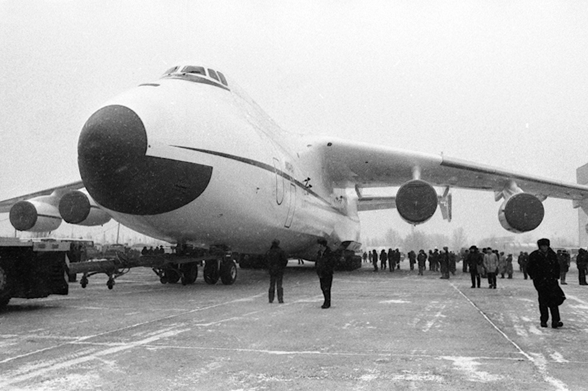

Коротка історія

Двадцять першого грудня 1988 року відбувся перший політ дослідного зразка найбільшого у світі транспортного літака Ан-225 «Мрія», створеного київським заводом «Антонов». Спочатку його будували для космічної галузі — він міг транспортувати ракети і слугувати «стартовим майданчиком» для космічних кораблів. Але СРСР розпався, а «Мрію» до кінця 1990-х законсервували в ангарі. На початку 2000-х її реконструювали та модифікували для перевезення надважких та надгабаритних вантажівДосі існує лише один екземпляр Ан-225. Але він уже увійшов в історію, встановивши близько 250 світових рекордів за швидкістю, висотою, вантажопідйомністю. Ан-225 з максимальною злітною масою 640 т є найважчимлітаком у світі. Для порівняння, третій за вантажопідйомністю (після Ан-124 «Руслан») американський військово-транспортний літак C-5 Galaxy має максимальну злітну масу 381 т.
В серпні 1993 року на авіашоу МАКС-93 в Жуковському Ан-225 «Мрія» «виступав» уже з українським прапором на хвостовому оперенні та бортовим номером UR-82060. Нині функціонує лише один літак Ан-225. Він надає комерційні послуги з перевезення надважких та нестандартних вантажів до 250 000 кілограмів. Будівництво другого Ан-225 було практично завершене в кінці 1980-х, згідно з радянською космічною програмою. З розпадом Радянського Союзу у 1990 і закриттям програми «Енергія-Буран» єдиний діючий Ан-225 було поміщено в ангар, його двигуни було демонтовано для використання на літаках Ан-124. Другий близький до завершення Ан-225 було також законсервовано й поміщено в ангар. На 2010 рік роботи над другим екземпляром не ведуться, однак поступово назріває необхідність його добудування. Конструкції планера постійно ревізуються й подовжується їх ресурс.


У кінці 1980-х радянський уряд шукав шляхів отримання зиску від досягнень своєї військової промисловості. У 1989 АНТК Антонова створила холдингову компанію з надання послуг із перевезень важких вантажів під назвою «Авіалінії Антонова», що містилась у Києві, а працювала з аеропорту Станстед поблизу Лондона.26 травня 2001 року Ан-225 отримав сертифікат типу від Авіаційного Реєстру Міждержавного Авіаційного Комітету. Перший комерційний політ «Мрія» здійснила 31 січня 2002 року зі Штутгарта до королівства Оман із вантажем 187,5 тонн харчових продуктів для американських військових, розташованих у країні.Можливість швидкого транспортування великогабаритних вантажів, що необхідні постраждалим від стихійних лих, забезпечило літаку репутацію цінного помічника для гуманітарних організацій.
У серпні 2009 року «Мрія» була занесена до Книги рекордів Гіннеса за перевезення найбільшого в історії авіації моновантажу загальною вагою в 187,6 тонни. Це був генератор вагою у 174 тонни, що транспортувався разом із спеціальною рамою з німецького Франкфурта в Єреван, для нової вірменської електростанції. 25 березня 2011 року літак Ан-225 авіакомпанії «Авіалінії Антонова» доставив до Японії гуманітарні вантажі, генератори і техніку загальною масою 140 тонн для постраждалих від землетрусів та цунамі, на замовлення уряду Франції. 25 березня 2020 року стало відомо, що Ан-225 «Мрія» після 18 місяців ремонту та модернізації здійснив перший політ. «Зокрема було перевірено нову систему управління» — зазначається у повідомленні компанії. На літаку було встановлено нову систему керування силовою установкою українського виробництва
